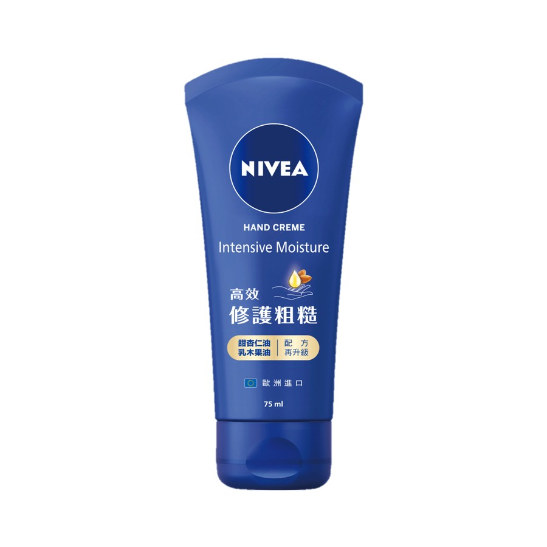
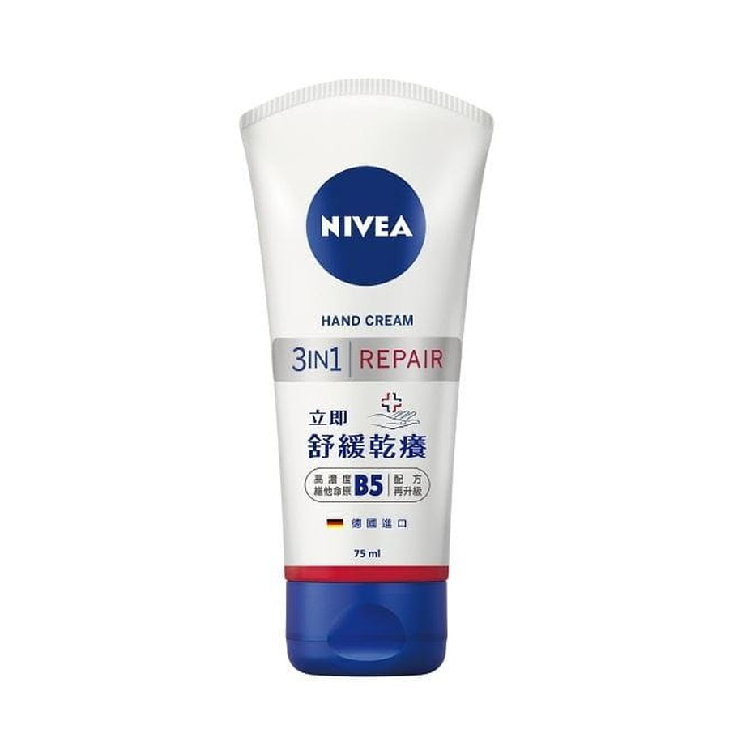
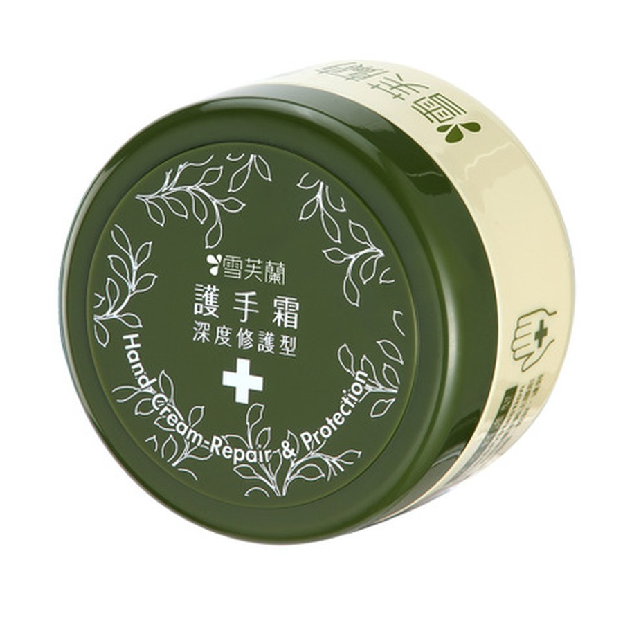

冬天護手霜怎麼挑？先看容量、成分標示與通路價：4 款比較
本文怎麼整理。以下依 2026 年 11 月 27 日（台灣時間，UTC+8）妮維雅台灣官網（含同站列出的艾翠斯商品頁）、雪芙蘭品牌官網、康是美網購 eShop 與雪芙蘭官方購物網整理規格與標價。沒有實機測試，也不比較銷量。妮維雅台灣官網商品頁沒有列出建議售價，前 3 款價格改列康是美網購 eShop 當日售價，頁面另有建議售價的會在各款價格框註明；雪芙蘭價格依官方購物網當日售價，同頁另列價格也寫在註記。各通路售價會浮動，不能直接當成蝦皮售價。
快速結論：先對照你的情況
以下只摘錄本文可核對的規格標示與「適合誰」，不是實機評測排名；細節請看各款說明。
- NT$125–149當日通路售價（查詢日 2026-11-27）
- 75 ml／100 ml／100 g毫升與克不能直接當成相同體積
- 4 款成分標示不同甜杏仁油、維生素原 B5、小甘菊、金盞花與蜂蠟
各款售價見下方對照表與價格框。前 3 款為康是美 eShop 2026-11-27 標價，雪芙蘭為官方購物網同日標價；會浮動，不能當成蝦皮售價。建議售價或另列原價若頁面有寫，放在各款價格框。
- 要 75 ml，看 VEGAN 純素與甜杏仁油、乳木果油標示妮維雅密集保濕修護｜75 ml ↓
- 要 75 ml，看乾燥／極度乾燥與維生素原 B5 標示妮維雅極致修護｜商品圖與通路名稱標示 75 ml ↓
- 要 100 ml 軟管，看無添加人工香料與小甘菊標示艾翠斯修護護手霜｜100 ml・軟管 ↓
- 要 100 g，看金盞花萃取精華與蜂蠟標示雪芙蘭深度修護型｜100 g ↓
下單前請核對品名、容量與劑型，不要買成身體乳液、潤手護指霜、滋養霜或其他組合。
目錄（8 項）
4 款候選怎麼對照
本站含蝦皮分潤連結，透過連結購買我可能獲得分潤，不影響你的價格
| 商品 | 通路價 | 關鍵規格 | 差異標示 |
|---|---|---|---|
|

妮維雅
密集保濕修護
|
NT$129 | 75 ml | 甜杏仁油、乳木果油 |
|

妮維雅
極致修護
|
NT$129 | 75 ml1 | 維生素原 B5 |
|
|
NT$149 | 100 ml | 小甘菊；無添加人工香料 |
|

雪芙蘭
深度修護型
|
NT$125 | 100 g | 金盞花、蜂蠟、乳木果油 |
通路售價・查詢日 2026-11-27・編號非排名・點品名看詳細
- 妮維雅 密集保濕修護 NT$129 75 ml 甜杏仁油、乳木果油
- 妮維雅 極致修護 NT$129 75 ml1 維生素原 B5
-
 艾翠斯 修護護手霜
NT$149
100 ml · 軟管
小甘菊；無添加人工香料
艾翠斯 修護護手霜
NT$149
100 ml · 軟管
小甘菊；無添加人工香料
- 雪芙蘭 深度修護型 NT$125 100 g 金盞花、蜂蠟、乳木果油
前 3 款價格為康是美 eShop 2026-11-27 售價（頁面另列建議售價 NT$189，未寫進表內）。雪芙蘭為官方購物網同日售價 NT$125（同頁另列 NT$149）。售價會變，不能當成蝦皮售價。
1 極致修護的 75 ml 為官網商品圖與康是美網購商品名稱標示，商品頁內文本次未列容量數字。
逐款比較
編號依文章順序，不是評測排名。
妮維雅
密集保濕修護護手霜
妮維雅密集保濕修護護手霜（75 ml，官網點名甜杏仁油、乳木果油）
- 容量
- 75 ml（官網文字與商品圖管身）
- 產品號碼
- 84697
- 官網點名成分
- 甜杏仁油、乳木果油
- 其他官網標示
- VEGAN 純素保養（不添加動物性成分）
- 價格資訊
- 康是美 eShop 2026-11-27 售價 NT$129（另列建議售價 NT$189）；官網未列建議售價
- 規格來源
- 規格依妮維雅台灣官網；售價依康是美網購 eShop
官網寫：「24H長效潤澤不黏膩」（來源：妮維雅台灣官網；此為官網說明，不是本篇實測）。想要 75 ml，也想對到 VEGAN 純素或不添加動物性成分、以及甜杏仁油與乳木果油標示的人，可以先看這一款。
規格來源：品牌官網
妮維雅
極致修護護手霜
妮維雅極致修護護手霜（官網商品圖與通路名稱標示 75 ml，商品頁內文未列）
- 容量
- 官網商品圖與通路名稱標示 75 ml，商品頁內文未列
- 產品號碼
- 84687
- 官網點名成分
- 維生素原 B5；成分表有乳木果油
- 其他官網標示
- 適用乾燥肌膚、極度乾燥
- 價格資訊
- 康是美 eShop 2026-11-27 售價 NT$129（另列建議售價 NT$189）；官網未列建議售價
- 規格來源
- 規格依妮維雅台灣官網；售價依康是美網購 eShop
官網寫：「添加維生素原B5，可密集修護、舒緩雙手乾燥緊繃」（來源：妮維雅台灣官網；此為官網說明，不是本篇實測）。想看官網明寫適用乾燥／極度乾燥，並且有標示維生素原 B5 的人，可以先看這一款。兩款妮維雅通路價相同，下單前請核對品名「極致修護護手霜」與產品號碼 84687。
規格來源：品牌官網
艾翠斯
修護護手霜
艾翠斯修護護手霜（100 ml 軟管，官網點名天然小甘菊修護配方）
- 容量與劑型
- 100 ml；軟管
- 官網點名成分
- 天然小甘菊修護配方
- 其他官網標示
- 適用乾燥肌膚、極度乾燥；無添加人工香料；官網寫經肌膚相容性測試（該頁未列測試條件，不作評測結論）
- 價格資訊
- 康是美 eShop 2026-11-27 售價 NT$149（另列建議售價 NT$189）；官網未列建議售價
- 規格來源
- 規格依妮維雅台灣官網該商品頁；售價依康是美網購 eShop
官網寫：「添加天然小甘菊修護配方，能立即修護脫皮及粗糙雙手，同時在肌膚表面形成天然保護膜，使雙手避免外界傷害，持續全天候的深層滋潤及保濕效果!」（來源：妮維雅台灣官網該商品頁；此為官網說明，不是本篇實測）。想買 100 ml 軟管、也想對到無添加人工香料標示的人，可以先看這一款。下單前請核對是修護護手霜，不要下成潤手護指霜。
規格來源：品牌官網
雪芙蘭
護手霜（深度修護型）
雪芙蘭護手霜（深度修護型）100 g（官網點名金盞花萃取精華、蜂蠟、乳木果油）
- 容量
- 100 g（品牌官網）
- 官網點名成分
- 金盞花萃取精華、蜂蠟、乳木果油、防護因子
- 其他官網標示
- 品牌官網說明對應冬天碰水、低溫情境
- 價格資訊
- 雪芙蘭官方購物網 2026-11-27 售價 NT$125（同頁另列 NT$149）
- 規格來源
- 規格依雪芙蘭品牌官網；售價依雪芙蘭官方購物網
官網寫：「結合金盞花萃取精華、蜂蠟、乳木果油及防護因子，能舒緩冬天碰水、寒冷低溫造成的手部肌膚乾裂、脫皮、粗糙等現象。」（來源：雪芙蘭品牌官網；此為官網說明，不是本篇實測）。想看 100 g、也想對到金盞花萃取精華與蜂蠟標示的人，可以先看這一款。下單前請確認品名是深度修護型 100 g，不要買成滋養霜或其他容量。
規格來源：品牌官網；售價依官方購物網
適合誰
- 想挑 75 ml、看重 VEGAN 純素（不添加動物性成分）與甜杏仁油、乳木果油標示：看妮維雅密集保濕修護護手霜。
- 想挑 75 ml、看重官網標示適用乾燥／極度乾燥肌膚與添加維生素原 B5：看妮維雅極致修護護手霜。
- 想挑 100 ml 軟管、看重無添加人工香料與天然小甘菊修護配方標示：看艾翠斯修護護手霜。
- 想挑 100 g、看重金盞花萃取精華與蜂蠟配方標示：看雪芙蘭護手霜（深度修護型）。官方購物網當日標價 NT$125。
本文沒有實測哪一款比較滋潤，也不比較銷量。下單前請核對品名、容量與劑型，不要買成身體乳液、潤手護指霜、滋養霜或其他組合。
資料與更新紀錄
2026-11-27（台灣時間，UTC+8） 依妮維雅台灣官網、雪芙蘭品牌官網整理規格與標示；妮維雅極致修護的 75 ml 依官網商品圖與康是美 eShop 商品名稱。前 3 款售價依康是美網購 eShop 2026-11-27 標價，雪芙蘭依官方購物網同日標價（本文不放通路外連）。沒有實機測試。